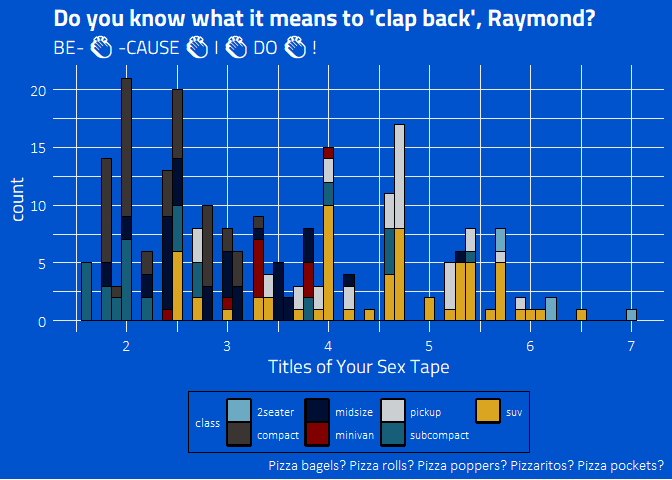

Ryo Nakagawara | Twitter: @R_by_Ryo
The tvthemes package is a collection of various ggplot2 themes and color/fill palettes based on everybody’s favorite TV shows. What kick-started this whole package was my blogpost looking at simple TV stats on my current favorite TV show, Brooklyn Nine-Nine. I got a lot of good feedback on the colors I used for the custom ggplot2 theme and color palettes so I decided to expand it to other shows that I love! Suggestions and Pull Requests for palettes/themes are welcome!
- Package Website
- Intro to
tvthemes 0.0.0.9100blog post tvthemes 1.0.0& CRAN release blog posttvthemes 1.1.0& CRAN release blog post
library(tvthemes)
library(ggplot2)
library(extrafont)
loadfonts(quiet = TRUE)
ggplot(mpg, aes(displ)) +
geom_histogram(aes(fill = class),
col = "black", size = 0.1,
binwidth = 0.1) +
scale_fill_brooklyn99(palette = "Dark") +
labs(title = "Do you know what it means to 'clap back', Raymond?",
subtitle = glue::glue("BE- {emo::ji('clap')} -CAUSE {emo::ji('clap')} I {emo::ji('clap')} DO {emo::ji('clap')} !"),
x = "Titles of Your Sex Tape",
caption = "Pizza bagels? Pizza rolls? Pizza poppers? Pizzaritos? Pizza pockets?") +
theme_brooklyn99(title.font = "Titillium Web",
text.font = "Calibri Light",
subtitle.size = 14)
Current list of TV shows
- Avatar: The Last Airbender: theme + palettes (Fire Nation, Water Tribe, Earth Kingdom, & Air Nomads)
- Brooklyn Nine-Nine: theme + palettes (regular & dark)
- Game of Thrones/A Song of Ice & Fire: ‘The Palettes of Ice & Fire’ (currently: Stark, Baratheon (Stannis), Lannister, Tully, Targaryen, Martell, Greyjoy, Tyrell, Arryn, Manderly)
- Rick & Morty: theme + palette
- Parks & Recreation: two themes (light & dark) + palette
- The Simpsons: theme + palette
- Spongebob Squarepants: theme + palette + background images
- Hilda: Day, Dusk, Night themes + palettes
- Attack on Titan: palette
- Kim Possible: palette
- Big Hero 6: palette
- Gravity Falls: palette
- Steven Universe: palette
- More in future releases…
- Development branch: TBD…
Installation
You can install tvthemes by:
## install.packages(devtools)
## for development version:
devtools::install_github("Ryo-N7/tvthemes")
## v1.1.0 is available on CRAN!
install.packages("tvthemes")Now available on CRAN!
tvthemes 1.0.0 Major Changes
See vignette.
Fonts & Colors
See vignette.
Examples
You can find the code for all the examples below in the “Examples” Vignette on the Package Website.
Contributing
Please note that the tvthemes project is released with a Contributor Code of Conduct. By contributing to this project, you agree to abide by its terms.
License
This code is released under the GPL v3 License - see the LICENSE.md file for details.
Credits
Inspired by Matt Oldach‘s {vaporwave}, Bob Rudis’ {hrbrthemes}, Garrick Aden-Buie’s {ggpomological}, Ewen Henderson’s {ghibli}, rOpenSci’s {ochRe}, & Nathan Cunningham.
Hilda palettes from Matt Shanks and ChevyRay.
“Some Time Later” font courtesy of Frederick Brennan.

{kind=link}